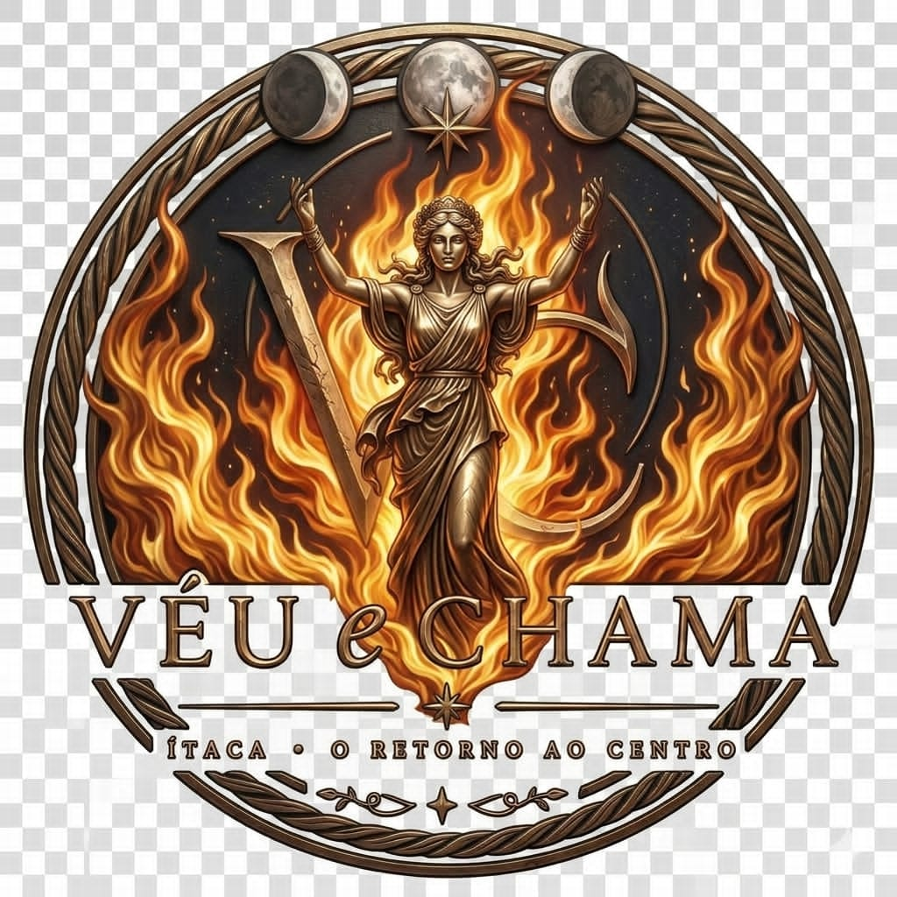

Você aprendeu a sustentar relações, responsabilidades, expectativas e versões de si. Mas chega um momento em que continuar se adaptando não é maturidade. É distância de si.
Ítaca nasce para esse momento: uma travessia para reconhecer o que já não cabe, reencontrar o que permanece vivo e integrar o corpo, o desejo, o feminino, o masculino, o limite e a direção.
Você não retorna para ser quem você era. Retorna para buscar a parte de você que nunca deveria ter ficado para trás.
Ítaca é o símbolo do retorno. Não de voltar para quem você era, mas de reconhecer quem você se tornou depois de tudo o que atravessou — porque toda travessia transforma. Você pode até retornar ao mesmo lugar, mas não retorna sendo a mesma pessoa.
Ítaca não é voltar ao passado. É retornar ao próprio centro.
Você não precisa abandonar tudo o que construiu para começar uma nova travessia. Às vezes, o chamado é outro: perceber o que dentro de você deixou de caminhar junto — razão e intuição, força e sensibilidade, ação e receptividade, o que você deseja e o que você sustenta.
Ítaca é onde essas partes voltam a se encontrar.
Uma experiência de retorno, presença e integração. Ítaca foi pensada para ser vivida no corpo, na presença e na experiência — não para sair dali com mais teoria, mas com mais clareza sobre si e sobre a forma como você quer caminhar daqui para frente.
Algumas coisas a gente não entende. A gente atravessa.
O Instituto Estrela D'Alva conduz a travessia Ítaca em dois movimentos complementares, do reencontro individual à integração das polaridades — sustentados por tradição, música e presença corporal.
Uma experiência voltada ao reencontro com o corpo, a percepção, a sensibilidade, o desejo e a própria presença. Não para construir uma nova versão de si, mas para reconhecer o que já existe, escutar o que foi silenciado e recuperar espaço dentro da própria vida.
Ao longo dessa travessia, o feminino aparece não como fragilidade, mas como força de percepção, criação e consciência.
Retornar à mulher é voltar a habitar a si.
Quando sentir e agir deixam de caminhar em direções opostas. Dentro de nós existem forças que sentem, percebem, criam e recebem — e também forças que escolhem, direcionam, sustentam e constroem. Quando uma fala sem a outra, a vida pode perder equilíbrio.
Nesta travessia, o convite é reconhecer essas duas presenças dentro de si e permitir que elas deixem de disputar espaço: intuição e direção, sensibilidade e estrutura, desejo e ação.
O centro nasce quando essas forças aprendem a caminhar juntas.
No sábado à tarde, o grupo Sangue de Éwora conduz o aprofundamento da vivência: raízes e fundamentos da tradição Stregheria Etrusca Romana, cosmologia, natureza, ancestralidade, simbologia e uma prática guiada de presença, respiração e conexão com os elementos naturais.
Durante a travessia, a música também estará presente. Há experiências que a palavra conduz; outras, a música atravessa. A arte também é caminho.
30 e 31 de outubro e 1º de novembro de 2026 — uma travessia entre aquilo que você aprendeu a sustentar, aquilo que deixou de si pelo caminho e o reencontro entre a Deusa e o Deus dentro de você.
O valor promocional e a localização exata serão encaminhados aos interessados via WhatsApp ou e-mail após a triagem do pré-cadastro.
Preencha seus dados para manifestar interesse na travessia "Véu & Chama: Ítaca", de 30 e 31 de outubro e 1º de novembro de 2026. O pré-cadastro não gera nenhuma cobrança e não é uma inscrição confirmada — após a triagem, você receberá por WhatsApp ou e-mail todas as informações sobre valores, formas de pagamento e localização.
Não. O pré-cadastro é 100% gratuito e não gera nenhuma cobrança automática ou compromisso financeiro. Ele serve apenas para registrar seu interesse na travessia.
Acontece nos dias 30 e 31 de outubro e 1º de novembro de 2026. O valor promocional e a localização completa são enviados diretamente ao seu WhatsApp ou e-mail após o pré-cadastro e a triagem.
Não é necessária nenhuma experiência prévia. A vivência é conduzida de forma acolhedora e progressiva, adequada tanto para iniciantes quanto para quem já participa de outros processos de autoconhecimento.
A vivência de aprofundamento de sábado à tarde é conduzida pelo grupo Sangue de Éwora, trabalhando a tradição Stregheria Etrusca Romana, cosmologia, natureza e ancestralidade.
O pré-cadastro garante prioridade de contato, mas a confirmação da vaga acontece somente após a triagem e o retorno via WhatsApp ou e-mail, sem qualquer cobrança até essa etapa.